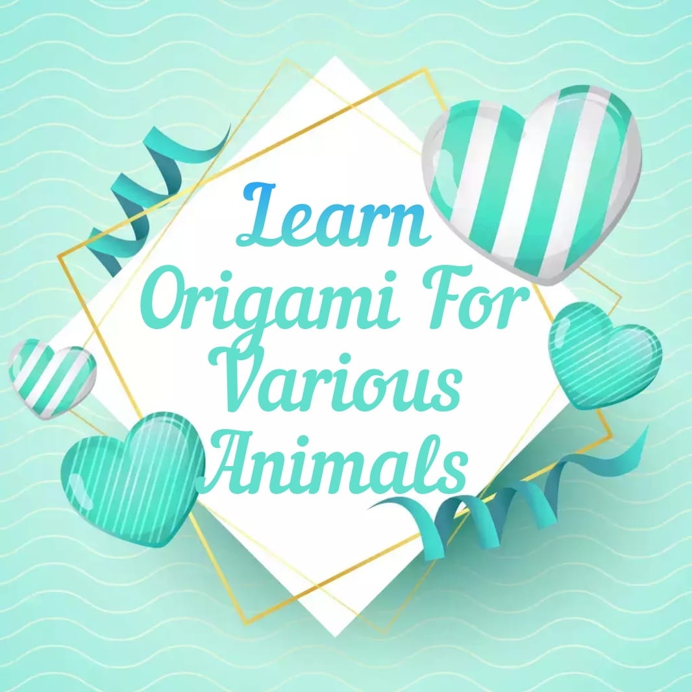
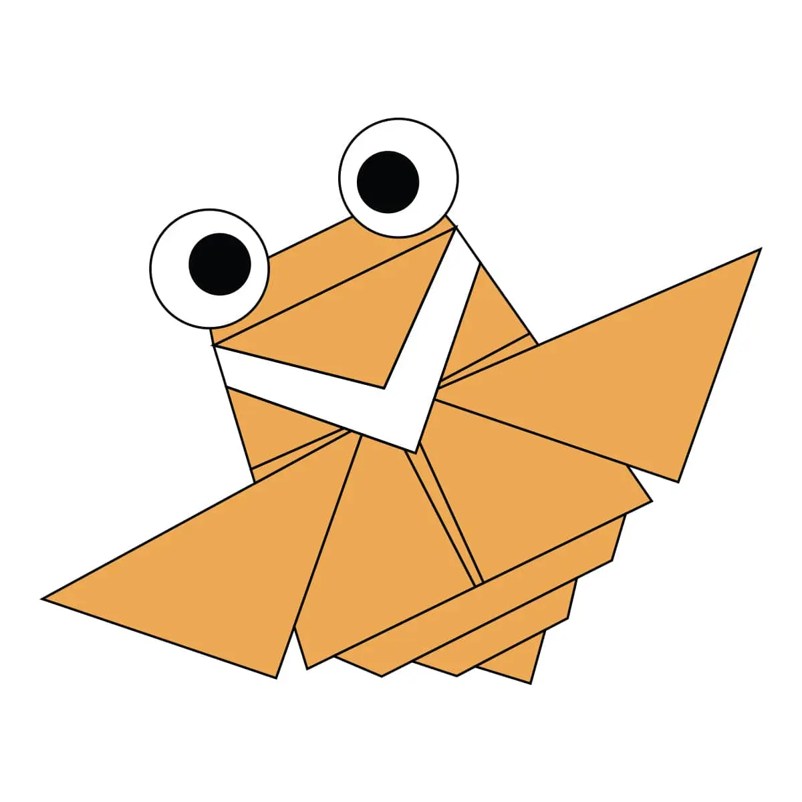
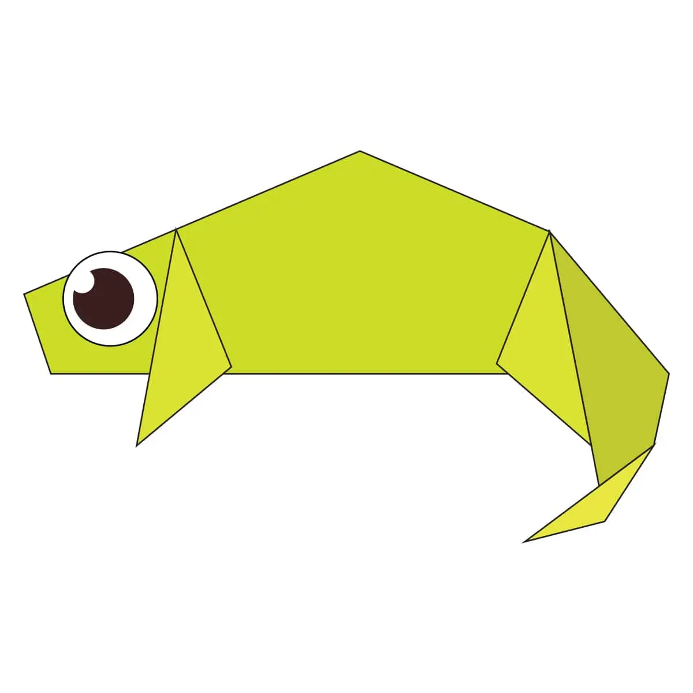
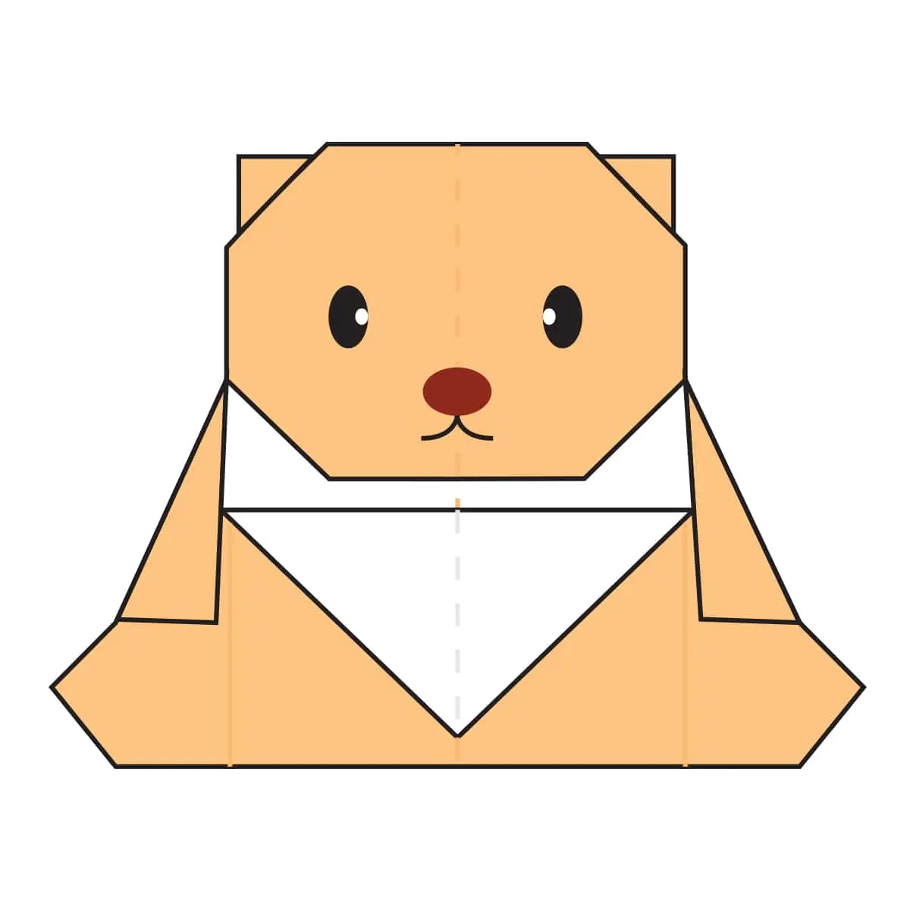
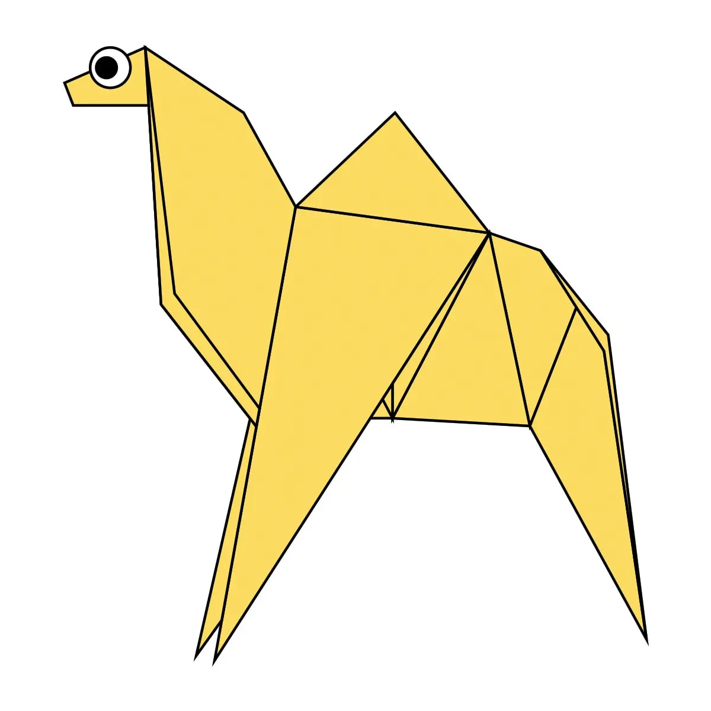

Origami for Cicada
Interseting Facts about Cicada:
1) The buzzing sound they make is a mating call.
2) Each species of cicada has a different song.
3) They vary in size from 0.75 to 2.25 in.
Origami for Pigeon
Interseting Facts about Pigeon:
1) Pigeons are highly sociable animals.
2) Pigeons are incredibly complex and intelligent animals.
3) Pigeons mate for life.

Origami for Chameleon
Interseting Facts about Chmeleon:
1) Chameleons have eyes in the backs of their heads.
2) Chameleons are tree-huggers.
3) They Have Panoramic Vision.

Origami for Bear
Interseting Facts about Bear:
1) At birth, bear cubs are blind and naked.
2) Bears grieve deeply for others.
3) Bears care deeply about family members.

Origami for Camel
Interseting Facts about Camel:
1) Camels can completely shut their nostrils during sandstorms.
2) Camels do not store water in their humps.
3) A thirsty camel can drink up to 135 liters in one sitting.